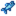

Plantilla:FishLocations Beach
Ir a la navegación
Ir a la búsqueda
Consulte la página de documentación en inglés para obtener más información sobre esta plantilla.
Uso
Esta plantilla se puede utilizar ingresando lo siguiente en una página relevante.
{{FishLocations Beach}}
Resultados en ...
| Hora | |||||||||||||||||||||
|---|---|---|---|---|---|---|---|---|---|---|---|---|---|---|---|---|---|---|---|---|---|
| 06 | 07 | 08 | 09 | 10 | 11 | 12 | 13 | 14 | 15 | 16 | 17 | 18 | 19 | 20 | 21 | 22 | 23 | 00 | 01 | ||
|  Anchoa | |||||||||||||||||||||
| Sólo días lluviosos | |||||||||||||||||||||
| 06 | 07 | 08 | 09 | 10 | 11 | 12 | 13 | 14 | 15 | 16 | 17 | 18 | 19 | 20 | 21 | 22 | 23 | 00 | 01 | ||
| Sólo días lluviosos | |||||||||||||||||||||
| Sólo días soleados | |||||||||||||||||||||
| 06 | 07 | 08 | 09 | 10 | 11 | 12 | 13 | 14 | 15 | 16 | 17 | 18 | 19 | 20 | 21 | 22 | 23 | 00 | 01 | ||
| Sólo días lluviosos | |||||||||||||||||||||
| Anchoa | |||||||||||||||||||||
| Sólo días lluviosos | |||||||||||||||||||||
| 06 | 07 | 08 | 09 | 10 | 11 | 12 | 13 | 14 | 15 | 16 | 17 | 18 | 19 | 20 | 21 | 22 | 23 | 00 | 01 | ||
| Sólo días lluviosos | |||||||||||||||||||||